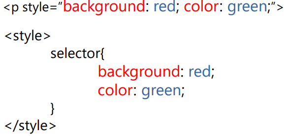

Лекція 4. Вступ до CSS
План лекції:
- Універсальні атрибути
- Підключення
- Селектори
- Пріоритетність CSS
CSS
CSS (каскадні таблиці стилів) – мова, що змінює зовнішній
вигляд або поведінку HTML елемента
Типи стилів:
- Браузерний – оформлення за замовчуванням, задане
елементами веб-сторінки самим браузером.
- Авторський – стилі, додані розробником.
- Користувальницький – визначення зовнішнього вигляду сайту
користувачем через налаштування браузера або веб-сторінки.
Синтаксис CSS
Структура запису стилю вказується в такий спосіб:
- Властивість (ключ, який аспект елемента стилізуватиметься)
- Двокрапка (перехід, показує, що властивість вже вказано і надалі буде значення для
нього)
- Значення
- Крапка з комою (правило стилю завершено)

Додавання стилів на сторінку
- Inline (вбудований) – підключення стилів за допомогою атрибута стиль.
- Внутрішні стилі – написання глобальних стилів у тезі style
- Зовнішні стилі – написання глобальних стилів в окремому файлі з
розширенням .css, підключається до сторінки HTML через тег link.
Підключення та написання стилів має бути у тезі head, крім inline.
Inline краще використовувати якомога рідше!
Резюме
- Універсальні атрибути - атрибути, застосування яких можливе до всіх елементів html
- Підключення CSS — створення прив'язки до CSS правил у HTML елементах через
селектори.
- Пріоритет CSS – визначення важливішого запису правила стилю у разі конфлікту.
- Каскад CSS – можливість застосування правил одного елементу через різні поводження з
однаковим пріоритетом (специфічністю). Такі правила з рівною пріоритетністю і з них
спрацьовує останній запис.